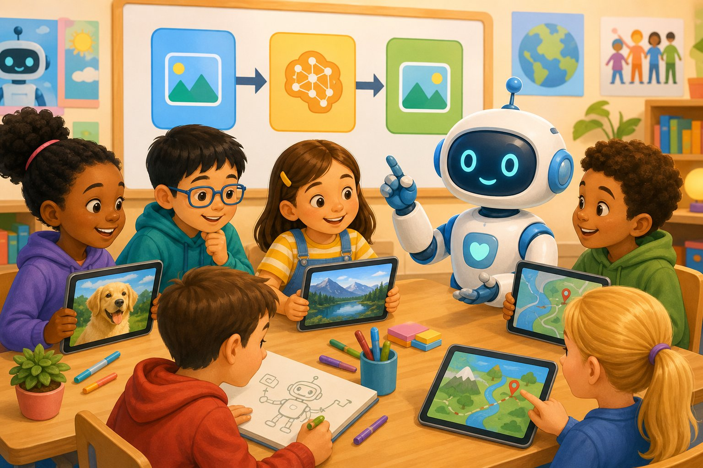
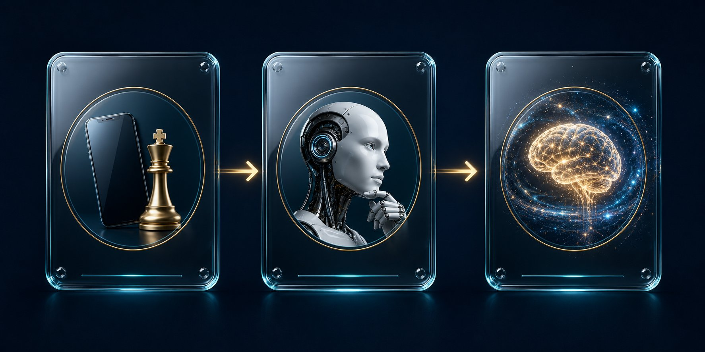
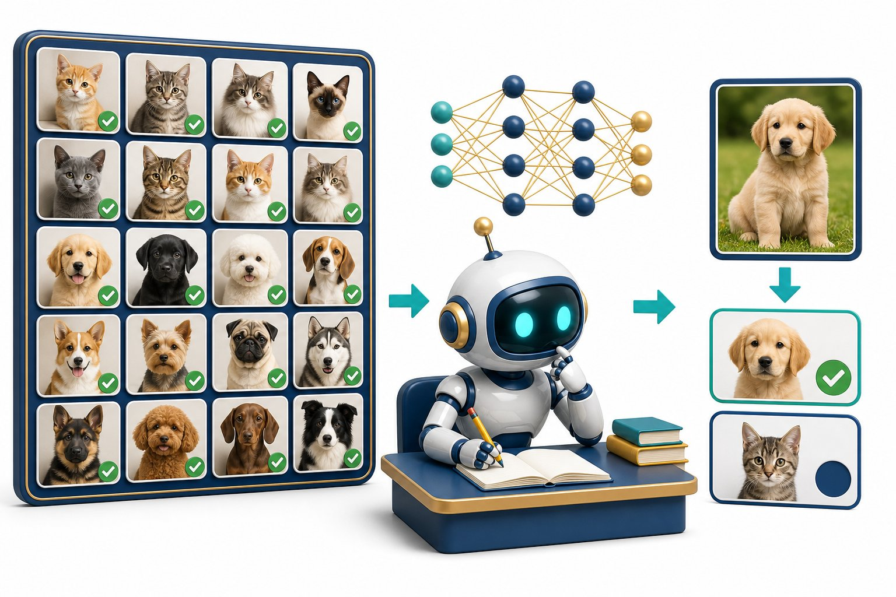
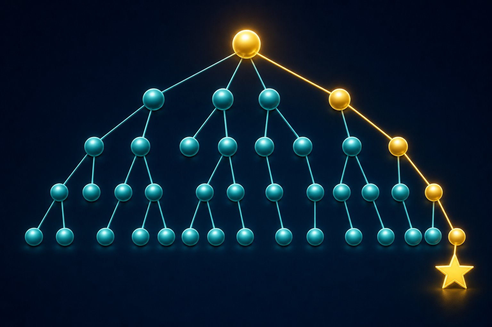
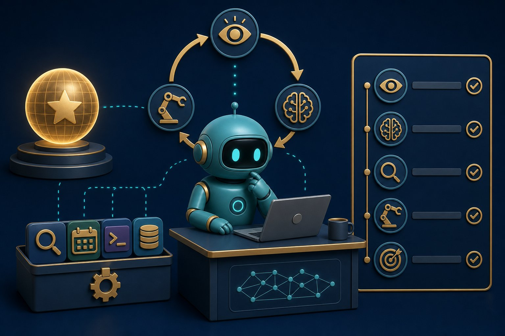

The full map of AI: school intuition, undergraduate CS, agents & agentic systems, industry practice, and PhD research topics — with diagrams, notes, MCQs, and scored exams.
30teaching chapters
150+scored MCQs
70+practice questions
30final exam questions
This book assumes no prior AI knowledge. It now covers the whole stack: school-level “what is a smart machine?”, classical search and logic, machine learning, deep learning, LLMs, AI Agents and Agentic AI, robotics, theory, alignment, and how research is done.
Jump in by level
Orientation
How to use this book
Treat it as a textbook you can quiz yourself with — not a pile of slides.
What you get in every chapter
Full lesson
Core ideas explained in plain language, then the precise terms professionals use.
Diagrams
Pictures and schematic diagrams so pipelines, networks and trade-offs stay visual.
Short notes
A dense recap box — the page you would write the night before an exam.
Point notes
Bullets you can scan in two minutes. Memorise these first.
MCQs and practice
MCQs — pick an option, then Check for immediate feedback, or Grade this chapter to score the whole set.
Practice questions — write your answer on paper (or in your head), then reveal the model answer and mark yourself.
Final exam — 30 mixed questions covering school through PhD topics (including Agents and Agentic AI). You get a percentage, a grade name (Apprentice → AI Hero), and a chapter-quiz breakdown.
Study path
Start with Class 1 → PhD paths and the school chapter, then Ch 1–7. Use the sidebar groups: classical search/logic, ML, deep learning, Agents / Agentic AI, then PhD theory and alignment. Jump via the cover buttons if you only need one level.
How scoring works
Chapter quizzes and the final exam are scored in this browser. Practice questions are self-marked. Reset progress from the sidebar if you want a clean retake.
Curriculum
Learning paths · Class 1 to PhD
One book, four routes. Pick the path that matches you. Every topic still lives in the syllabus even if you skip a route.
If you start from absolute zero
School chapter → What / History / Types.
Math + Python + Data.
Search + Logic (classical AI, still in GATE/UG exams).
ML → nets → NLP → Transformers → GenAI.
Fine-tuning → Agents → Agentic AI → RL.
Theory / XAI / alignment if you want research depth.
Ethics & MLOps. Exam.
Curriculum
Complete AI syllabus
School to doctoral research. Expand a level. If a line is here, it is in-scope for “all of AI.”
Class 1–8 · intuition
Computers follow instructions; AI also uses data and goals
Maps, photo search, voice, spam, game NPCs
Input → process → output; sensors and actuators
Pattern vs understanding; don’t share secrets with bots
Class 9–12
Algorithms; AI vs ML vs DL; ANI/AGI; history
Python, tables, charts; train/test; accuracy can lie
Adversarial ML; DP; neuro-symbolic; MoE; paper craft
Use as a GATE / interview / qualifier checklist. Chapters teach ideas; a PhD still needs papers, proofs, and experiments.
School · Class 1–12
AI for school
If you can use a phone, you already live with AI. Pictures first, jargon later.
Class 1–12Everyday AI

Figure S.1 — AI is a tool, not a magician.
A calculator always does 2+2=4 because a person wrote the rule. AI is when we also show the machine many examples so it can guess the next useful action. It still has no feelings.
Diagram S.1 — Every AI app is still input, process, output.
Where you already met AI
Maps suggesting a route
Camera finding faces
Voice assistant
Video feed choosing the next clip
Homework chatbot — which can be wrong
School rules
You must still understand the answer. Copying a bot essay is cheating and often false.
Never paste passwords, Aadhaar, or private photos into a public bot.
Check people-facts in a trusted source.
Don’t generate mean images of classmates.
Short notes
AI maps inputs to outputs using data and/or rules. Useful and fallible. You stay responsible. Next: Chapter 1 uses grown-up words for the same ideas.
Point notes
Input → process → output.
Examples teach many modern AIs.
Fluent ≠ true.
Keep secrets off public chats.
MCQs
3
1. A chatbot writes a perfect-looking history paragraph. You should:
Hallucinations look confident. Understanding is the assignment.
2. Face unlock is mainly:
Task is specialised. Size doesn’t matter.
3. Do not paste into a public AI chat:
Treat chats as possibly stored. Secrets stay offline.
Practice
P1. Name three AI systems you used this week and one way each could be wrong.
Maps (wrong traffic), autocorrect (wrong word), video feed (wastes time), chatbot (fake citation), camera (misses a face). Point: useful + fallible.
Self-mark:
Chapter 1 · Foundations
What is Artificial Intelligence?
AI is the field of building machines that perform tasks we usually associate with human intelligence — perceiving, deciding, predicting, and generating.
DefinitionAI vs ML vs DLApplications
A useful working definition: Artificial Intelligence (AI) is the science and engineering of making computers do things that would require intelligence if done by people. That includes recognising speech, translating language, driving a car, diagnosing from an image, or writing code.
AI is not one algorithm. It is a family of ideas: search, logic, probability, optimisation, and — today most famously — learning from data.
Figure 1.1 — Deep learning sits inside machine learning, which sits inside AI. Not all AI learns from data.
AI, ML, DL, and data science
Term
Meaning
Example
AI
Any technique that makes a machine act intelligently, including rules and search.
Chess engine with hand-written evaluation; spam filter; robot planner.
Machine learning (ML)
AI that improves from data instead of only hard-coded rules.
Predict house prices from past sales.
Deep learning (DL)
ML using multi-layer neural networks that learn features automatically.
ImageNet classifier; GPT-style language model.
Data science
Broader craft of asking questions of data: stats, visualisation, ML, communication.
Dashboard of churn plus a model that predicts it.
Diagram 1 — Nested fields. Expert systems are AI but not ML.
Two ways machines look “smart”
Knowledge-based (symbolic) AI — humans write rules: if fever and cough then consider flu. Transparent, brittle, expensive to maintain.
Statistical / learning-based AI — show many examples; the machine fits a function that maps inputs to outputs. Flexible, data-hungry, sometimes opaque.
Modern products mix both: a neural net proposes an answer; rules, tools, and human review constrain it.
What AI is not
It is not automatically conscious, and today’s systems do not “understand” the way people do.
It is not magic: every model is a function with parameters, trained by optimisation.
It is not always deep learning. Spreadsheets, logistic regression and gradient-boosted trees still run a huge share of industry ML.
Worked example — spam
A rule system flags mail containing “FREE LOTTERY”. Spammers change spelling. An ML classifier trained on labelled spam/ham learns many weak clues (links, sender reputation, unusual punctuation) and generalises better — until the data drifts, which is why models need monitoring.
Short notes
AI = machines performing intelligence-like tasks. ML = AI that learns from data. DL = ML with deep neural nets. Intelligence here means competent behaviour on a task, not human minds. Most commercial “AI” today is narrow: excellent at one job, useless at the next without retraining or a new prompt/tool setup.
Point notes
AI ⊃ ML ⊃ DL.
Symbolic AI uses rules; ML uses data + a learning algorithm.
A model is a function f(x) ≈ y with adjustable parameters.
Data science includes ML but also stats, cleaning, and communication.
Narrow AI can still be extremely valuable (translation, vision, coding assistants).
MCQs
5 questions · scored
1. Which statement is most accurate?
ML sits inside AI. Expert systems are AI without learning. Deep learning is only one style of ML.
2. A chess program that only uses hand-written evaluation and search is best described as:
Search + heuristics is classic AI. It is ML only if the evaluation or policy is learned from data (as in AlphaZero).
3. Why did statistical ML overtake purely rule-based systems in many products?
Real language, vision and fraud have endless edge cases. Learning from examples scales better than writing every rule.
4. Deep learning is specifically:
“Deep” refers to many layers that compose features. Random forests are ML, not DL.
5. “Narrow AI” means:
A translation model can be huge and still be narrow: it does not automatically run a company or invent physics.
Practice questions
Attempt each question, then reveal the model answer and mark yourself.
P1. A hospital wants to flag likely pneumonia from chest X-rays. Is this AI, ML, DL, or all three? Explain.
It is AI (a perceptual/diagnostic task). If the system is trained on labelled X-rays, it is ML. If that model is a convolutional neural net (the usual choice), it is also DL. A hand-crafted rule like “if white patch in lower lobe then pneumonia” would be AI but not ML.
Result key: AI yes; ML if trained on data; DL if a deep net is used.
Self-mark:
P2. Give one advantage and one disadvantage of rule-based AI versus learned models.
Rules: advantage — transparent and controllable (“never approve a loan if age < 18”). Disadvantage — cannot capture messy high-dimensional patterns; maintenance nightmare.
Learned models: advantage — discover patterns humans would miss. Disadvantage — need data, can silently fail on new distributions, harder to explain.
Self-mark:
P3. Why is a chatbot that quotes Wikipedia still not “understanding” in the human sense?
It maps text to likely continuations (or retrieved snippets) using statistics of language. It has no grounded model of the world, no beliefs, no accountability. Fluency is not comprehension. This matters: models can be confidently wrong (hallucination) because they optimise “sounds right”, not “is true”.
Self-mark:
Chapter 2 · Foundations
History of AI
AI did not begin with ChatGPT. It is a 70-year story of bold claims, winters, and a few phase changes in computing and data.
A timeline you can actually remember
Diagram 2 — Six landmarks. The field twice nearly froze when promises outran compute and data.
1950 — Can machines think?
Alan Turing’s paper Computing Machinery and Intelligence proposed the imitation game (Turing Test): if you cannot tell the machine from a human in conversation, treat it as intelligent. The test is a behavioural benchmark, not a theory of mind.
1956 — The name “Artificial Intelligence”
The Dartmouth workshop (McCarthy, Minsky, Shannon, Rochester and others) coined the term and bet that a few months of work might crack intelligence. That optimism set a pattern: overpromise, then winter.
Winters
When funding collapsed (1970s, late 1980s), it was usually because systems could not scale: combinatorial explosion in search, brittle expert systems, and computers that were too small. The lesson still holds — ideas need matching compute, data, and evaluation.
1997–2012 — Quiet competence, then ImageNet
IBM Deep Blue beat Kasparov (1997) mostly with search and specialised hardware. Statistical NLP and SVMs matured. In 2012, AlexNet crushed the ImageNet contest using a deep CNN on GPUs — the deep learning boom’s public start.
2017 onward — Sequence models grow up
The paper Attention Is All You Need introduced the Transformer. Scaling laws later showed that bigger models + more data + more compute predictably improved language modelling. ChatGPT (2022) made that capability a consumer product. The research frontier since then is less “invent a new layer type” and more data quality, alignment, tools/agents, multimodal models, and efficiency.
Key insight
Breakthroughs usually needed three things at once: a better model class, enough compute, and a dataset/benchmark that made progress measurable (ImageNet, SQuAD, GLUE, then next-token perplexity and human evals).
Short notes
Turing (1950) set a behavioural test. Dartmouth (1956) named the field. Two winters followed hype. Statistical ML and then deep CNNs (2012) revived it. Transformers (2017) plus scale produced modern LLMs. History’s moral: evaluation + resources matter as much as clever maths.
Point notes
1950 Turing Test · 1956 Dartmouth · 1997 Deep Blue · 2012 AlexNet · 2017 Transformer · 2022 ChatGPT.
AI winters: hype > capability.
GPUs made deep nets practical.
Scale (data, parameters, compute) is a central 2018–2020s story.
MCQs
4 questions
1. The Turing Test primarily measures:
It is a behavioural imitation test, not a proof of inner experience.
2. AlexNet (2012) mattered because it:
The ImageNet result convinced industry that deep learning was not a niche academic toy.
3. The 2017 Transformer paper’s core claim was that:
Attention Is All You Need dropped RNNs/CNNs as the backbone of translation models.
4. An “AI winter” is best described as:
Winters followed unmet promises and limited compute/data — a caution still relevant in hype cycles.
Practice questions
P1. Name three ingredients that turned deep learning from a curiosity into an industry (2012–2020).
Any solid trio: (1) large labelled datasets (ImageNet, web text), (2) GPU/TPU compute, (3) algorithms that train stably (ReLU, batch norm, residual connections, Adam), (4) open-source frameworks (Theano, Caffe, TensorFlow, PyTorch), (5) benchmarks that made progress public.
Self-mark:
P2. Why did expert systems stall even when they worked in narrow domains?
Knowledge acquisition bottleneck: experts cannot enumerate all cases. Rules conflict and rot. The systems did not generalise to slightly new problems. Maintenance cost grew faster than capability.
Self-mark:
Chapter 3 · Foundations
Types of AI
Classify systems by capability (what they could do in principle) and by how they use memory and experience.

Figure 3.1 — From narrow tools, to hypothetical general intelligence, to superintelligence. Only the first exists as products today.
By capability
Type
Definition
Status
ANI — Artificial Narrow Intelligence
Strong at a bounded task or cluster of tasks.
All current deployed AI: recommenders, detectors, LLMs (broad but still tool-like).
AGI — Artificial General Intelligence
Human-level competence across most cognitive tasks, including novel ones.
Not achieved. Definitions and tests are disputed.
ASI — Artificial Superintelligence
Exceeds humans on almost all valuable cognitive work.
Hypothetical; central to long-term safety debates.
LLMs feel “general” because language is a universal interface. They are still narrow in a strict sense: they do not autonomously run a scientific programme, reliably act in the physical world, or hold stable long-horizon goals without scaffolding. Treat them as extremely capable pattern engines plus tools.
By functionality (Russell & Norvig flavour / pop taxonomy)
Reactive machines — no memory of the past. IBM Deep Blue evaluated the current board.
Limited memory — use recent history. Self-driving stacks and almost all ML models (trained on past data, using a context window).
Theory of mind — would model others’ beliefs and intentions. Research, not a product category you can buy.
Self-aware AI — would have a model of itself as an agent. Science fiction / philosophy until evidence says otherwise.
By learning style (preview of later chapters)
Supervised — learn from input–label pairs.
Unsupervised / self-supervised — learn structure (or predict hidden parts of the input).
Reinforcement — learn from rewards by acting in an environment.
Short notes
Everything you use is ANI. AGI/ASI are capability levels, not brands. Most ML systems are “limited memory”: they use training data and a short context, not lifelong autobiographical memory. Do not confuse a wide skill surface (an LLM) with general autonomous intelligence.
Point notes
ANI exists · AGI/ASI do not (as of this book).
Reactive vs limited-memory vs ToM vs self-aware.
Supervised / unsupervised / RL are learning paradigms, not capability levels.
Chatbots ≠ AGI.
MCQs
4 questions
1. AlphaGo, a spam filter, and a face unlock system are all examples of:
Each is specialised. AlphaGo cannot file your taxes.
2. A model that only looks at the current input and has no state is closest to:
Reactive systems map the present percept to an action with no memory.
3. Self-supervised learning is usually grouped nearest to:
Predict-the-masked-token is a label created from the input. That is why LLMs can train on raw text.
4. Which is the honest status of AGI?
Impressive language competence is not an agreed AGI threshold.
Practice questions
P1. A journalist writes “GPT is AGI because it can code, translate, and write poems.” Write a 4-sentence rebuttal that is still fair to the model’s skill.
The model is unusually broad for ANI because language is a general interface. Breadth of demos is not the same as reliable, autonomous competence on new goals in the real world. It still fails in systematic ways (hallucination, weak long-horizon planning, no persistent agency). AGI would require a clearer bar — e.g. matching a skilled human across most economically useful cognitive tasks with learning on the fly — which has not been met.
Self-mark:
P2. Classify: (i) thermostat, (ii) spam filter trained on mail, (iii) robot that improves from reward in a warehouse.
(i) Reactive control / simple rules — barely AI, not ML. (ii) Supervised ANI, limited memory via training set. (iii) Reinforcement learning agent, still ANI if the task is warehousing only.
Self-mark:
Chapter 4 · Foundations
Mathematics for AI
You do not need a maths degree to start — but you do need four languages: vectors, probability, calculus, and a little statistics.
Every model in this book is the same object: a function with numbers inside it. Training is changing those numbers to reduce error. The maths below is the minimum that makes later chapters stop feeling like slogans.
1. Linear algebra — the language of data
A vector is an ordered list of numbers. One email might be a vector of word counts; one image is a long vector of pixel values (or a 3-D tensor: height × width × colour).
x = [x1, x2, …, xn]A data point with n features
A matrix stores many vectors (a dataset, or a layer of weights). The workhorse operation is the dot product: multiply matching entries, add them up. It measures “how aligned” two vectors are.
w · x = Σ wi xiWeighted sum — the core of linear models and neural layers
A linear layer is y = Wx + b: multiply by a weight matrix, add a bias. Deep nets stack nonlinear versions of this.
Diagram 4.1 — Vectors. Classification often draws a hyperplane whose normal is w.
2. Probability — the language of uncertainty
Models almost never output certainty. A classifier outputs P(spam | email). Bayes’ rule says how to invert conditionals:
Independence (Naive Bayes assumes features are independent given the class) is usually false but often useful. Expectation E[x] is the average value if you repeated the random process. Training often minimises expected loss on the data distribution.
3. Calculus — the language of learning
A derivative is the slope: if I nudge a weight, how does the loss change? Gradient is the vector of all those slopes. Gradient descent walks downhill:
w ← w − η ∇L(w)η (eta) is the learning rate — too big overshoots, too small crawls
Neural nets are nested functions, so we use the chain rule (backpropagation) to get gradients for early layers. You do not need to differentiate by hand; frameworks do it. You do need to know that a flat or exploding gradient means learning has broken.
4. Statistics — the language of evaluation
Mean, variance, standard deviation — centre and spread.
Train / validation / test — fit on train, tune on val, report on test once.
Bias vs variance — systematic error vs sensitivity to the sample (Chapter 7).
Predict ŷ = w·x. Loss L = (ŷ − y)². If x=2, y=1, w=0.8 then ŷ=1.6, L=0.36. Gradient dL/dw = 2(ŷ−y)x = 2.4. With η=0.1, new w = 0.8 − 0.24 = 0.56. The next prediction is closer.
Common mistake
Memorising formulas without units of meaning. Always ask: is this a vector of features, a probability, a slope, or a score on held-out data?
Short notes
Data = vectors/tensors. Models = matrix multiplies + nonlinearities. Learning = gradient descent on a loss. Uncertainty = probability. Reporting = statistics on data the model did not train on. Bayes updates beliefs; the chain rule lets error flow backward through layers.
Point notes
Dot product = weighted sum.
y = Wx + b is a linear layer.
P(A|B) = P(B|A)P(A)/P(B).
w ← w − η ∇L.
Never tune on the test set.
MCQs
5 questions
1. The gradient of the loss with respect to the weights points:
Gradient is steepest increase. Descent therefore subtracts η times the gradient.
2. If two feature vectors have a large positive dot product they are:
Dot product = |w||x|cosθ. Large and positive means acute angle.
3. In Bayes’ rule, P(A) is the:
Prior = belief before seeing B. Likelihood is P(B|A).
4. A learning rate that is far too large typically:
Steps overshoot the valley. Loss may explode to NaN.
5. You should report final accuracy on:
Test data estimates real-world generalisation. Tuning on it leaks information.
Practice questions
P1. Compute the dot product of w = [1, −2, 0.5] and x = [2, 1, 4]. If the linear model is ŷ = w·x + b with b = −1, what is ŷ?
P2. A disease has prior P(D)=0.01. A test has P(+|D)=0.9 and P(+|no D)=0.05. If a patient tests positive, is P(D|+ ) closer to 90%, 15%, or 1%? Sketch Bayes.
P(D|+) = (0.9·0.01) / 0.0585 ≈ 0.154 → about 15%, not 90%. Base rates matter. This is why “accurate tests” still yield many false alarms on rare diseases.
Self-mark:
P3. In one sentence each, say what goes wrong if η → 0 and if η is huge.
η ≈ 0: training barely moves; you waste compute. η huge: parameters jump; loss oscillates or becomes NaN. Practical training uses a schedule (decay, warmup) and sometimes adaptive methods (Adam).
Self-mark:
Chapter 5 · Foundations
Python for AI
Python won AI because the libraries are excellent and the syntax stays out of the way. You still need to know what each library is for.
The stack
Library
Job
NumPy
N-dimensional arrays, vectorised maths. The lingua franca.
Deep learning: tensors, autograd, GPUs. PyTorch is the research default.
Hugging Face Transformers
Pretrained language and vision models you can fine-tune.
NumPy mental model
A ndarray has a shape. A batch of 32 RGB images of 224×224 is (32, 3, 224, 224) or (32, 224, 224, 3) depending on channel layout. Avoid Python for loops over rows — use vectorised operations.
import numpy as np
X = np.array([[1.0, 2.0],
[3.0, 4.0]])
w = np.array([0.5, -1.0])
y_hat = X @ w # matrix-vector product
y_hat # array([ -1.5, -2.5])
scikit-learn pattern
from sklearn.model_selection import train_test_split
from sklearn.linear_model import LogisticRegression
from sklearn.metrics import accuracy_score
X_train, X_test, y_train, y_test = train_test_split(
X, y, test_size=0.2, random_state=42, stratify=y)
model = LogisticRegression(max_iter=1000)
model.fit(X_train, y_train)
pred = model.predict(X_test)
print(accuracy_score(y_test, pred))
PyTorch in five lines of meaning
Tensor — array that can live on GPU and track gradients.
nn.Module — a model; forward defines the computation.
loss.backward() — autograd fills .grad.
optimizer.step() — updates weights.
zero_grad — clear old gradients each step (they accumulate otherwise).
# one training step (sketch)
logits = model(xb)
loss = criterion(logits, yb)
optimizer.zero_grad()
loss.backward()
optimizer.step()
Key insight
Frameworks do not replace thinking. If you fit on leaked test features or shuffle a time series randomly, sklearn will happily give you a brilliant, meaningless score.
Short notes
Python + NumPy + Pandas for data; sklearn for classical ML; PyTorch (or Keras) for deep nets; Transformers library for LLMs. The universal sklearn API is fit/predict/transform. PyTorch training loop: forward → loss → zero_grad → backward → step.
Point notes
Vectorise with NumPy; don’t loop pixels in Python.
train_test_split before any fitting.
@ or np.dot for products.
Autograd implements the chain rule for you.
Reproducibility: set seeds; they are not perfect on GPU.
MCQs
4 questions
1. The sklearn methods used to train and then label new rows are:
Almost every sklearn estimator uses fit/predict (and transform for preprocessors).
2. Why call optimizer.zero_grad() each iteration in PyTorch?
Accumulation is a feature (for huge batches) but a bug if you forget to reset.
3. A CSV of customer rows is most naturally loaded with:
Tabular data → DataFrame. Convert to NumPy before sklearn if you like.
4. Vectorisation means:
NumPy/PyTorch run fast compiled loops internally.
Practice questions
P1. Write pseudocode for a full sklearn pipeline: load data, split, scale features using only the training set, train logistic regression, report test accuracy.
X, y = load()
Xtr, Xte, ytr, yte = train_test_split(X, y, stratify=y)
scaler = StandardScaler().fit(Xtr) # fit on train only
Xtr, Xte = scaler.transform(Xtr), scaler.transform(Xte)
clf = LogisticRegression().fit(Xtr, ytr)
print(accuracy_score(yte, clf.predict(Xte)))
Fitting the scaler on all data would leak test means/variances.
Self-mark:
P2. What is the shape of logits if a CNN takes a batch of 16 ImageNet images and has 1000 classes?
(16, 1000) — one score per class per image. Softmax along dim 1 turns them into probabilities.
Self-mark:
Chapter 6 · Foundations
Data & feature engineering
Models are downstream. Garbage in, confident garbage out. This chapter is the unglamorous majority of real AI work.
Figure 6.1 — A typical pipeline: collect → clean → features → train → evaluate → deploy → monitor.
Kinds of data
Tabular — rows and columns (transactions, medical records). Gradient boosting often still wins.
Images / video — grids of pixels. CNNs or vision transformers.
Text — tokens. Transformers.
Audio — waveforms or spectrograms.
Graphs — nodes and edges (molecules, social nets).
Cleaning
Duplicates, missing values, impossible ages, mixed date formats, leaked target columns, and shifted sensors. Plot distributions. For missing data: drop, impute (median/mode), or add a “was missing” flag — the flag is often predictive.
Features
A feature is an input the model may use. Engineering means making the signal easier to learn: log-income instead of income, day-of-week from a timestamp, TF–IDF from text, normalised pixel values in [0,1].
Scaling — StandardScaler (zero mean, unit variance) or min-max. Trees care less; linear models and nets care a lot.
Imbalance — 1% fraud. Accuracy is a trap; use precision/recall, F1, ROC-AUC, PR-AUC; consider class weights or resampling.
Splits without lying to yourself
Diagram 6.1 — Fit on train, choose models/hyperparameters on val, publish test once.
Leakage is the silent killer: scaling on full data, using future timestamps, including an ID that encodes the label, or putting the same patient in train and test. For time series, split by time. For people, split by person.
Short notes
Know your data type. Clean, then engineer features that match the model class. Scale for linear/neural models. Split by the real unit of generalisation (time, user, hospital). Leakage produces celebrity accuracy and production failure. Class imbalance needs the right metric, not just accuracy.
Point notes
Plot first.
Train / val / test — test is sacred.
Fit preprocessors on train only.
Accuracy ≠ success on imbalanced data.
Deep learning still needs clean labels.
MCQs
4 questions
1. Fitting StandardScaler on train+test together is:
Test mean/variance sneak into the transform. Always fit on train, apply to test.
2. For a dataset with 99% class A, 1% class B, 99% accuracy might mean:
Majority-class classifier gets 99% accuracy and 0% recall on B.
3. Time-series forecasting should usually split:
Random splits let the model peek at the future through correlated neighbours.
4. A “was missing” indicator feature is useful because:
Patients missing a lab test may be healthier (or poorer). The gap is a signal.
Practice questions
P1. You find a column risk_score_legacy that correlates 0.97 with the label you want to predict. Should you use it? What do you check first?
Suspect leakage. Ask: is this score computed from the label, or only available after the decision you are trying to automate? If it would not exist at prediction time in production, drop it. If it is a legitimate earlier score, it may be a valid feature — document it.
Self-mark:
P2. Design a split for 10,000 chest X-rays from 4,000 patients across 3 hospitals, aiming to generalise to a new hospital.
Do not split by image. Keep all images of a patient together. For “new hospital” generalisation, hold out an entire hospital as test (leave-one-hospital-out). Random image splits massively overestimate clinical performance because the model can memorise machines and patient IDs.
Self-mark:
Chapter 7 · Machine learning
Machine learning fundamentals
Learning = search for parameters that make a model score well on unseen data, not just the data it was shown.
The three big paradigms
Paradigm
Supervision
Goal
Supervised
Labels y
Predict y from x
Unsupervised
None
Structure, clusters, compressions
Reinforcement
Rewards
Policy that maximises return
Self-supervised learning (mask a word, predict it) is supervised learning where the label is made from the input. It is how foundation models swallow the internet.
Loss functions
A loss is a number that is small when the model is right. Training minimises average loss.
MSE — (ŷ − y)² for regression. Punishes large errors.
Cross-entropy / log loss — for classification probabilities. Hates confident wrong answers.
Hinge — classic SVM.
Underfitting vs overfitting
Diagram 7.1 — Underfit ignores the pattern; overfit memorizes noise; good fit captures the signal.
Regularisation fights overfit: L2 (weight decay), L1 (sparsity), dropout, early stopping, more data, simpler models.
Bias–variance trade-off
Bias: the model class is too dumb (linear line through a curve). Variance: the model swings wildly with different samples. Total expected error ≈ bias² + variance + noise. Deep nets complicate the classic U-shape, but the vocabulary is still how teams talk.
Metrics
Metric
Use
Accuracy
Balanced classes, equal cost errors
Precision
Of predicted positives, how many are real? (spam: don’t bury real mail)
Recall / sensitivity
Of real positives, how many did we catch? (cancer screening)
Choose a loss that matches the task. Watch train vs val curves: both high error → underfit; train great / val poor → overfit. Pick metrics from the cost of mistakes, not habit. Cross-validation estimates variance of performance. Regularise rather than celebrating train accuracy.
P2. Train error 25%, val error 26% after many epochs. What is more likely, and what would you try?
Underfitting (high bias): both errors are high and close. Try a richer model, better features, longer training, less regularisation. Overfitting would show a large gap (train 2%, val 26%).
Self-mark:
P3. Why can accuracy be 99% and the model still be useless for fraud detection?
If fraud is 0.5% of rows, always predicting “not fraud” is 99.5% accurate and catches nothing. Use recall at a budgeted precision, PR-AUC, or expected cost. Report a confusion matrix at the operating threshold.
Self-mark:
Chapter 8 · Machine learning
Supervised learning
Learn a mapping x → y from labelled examples. Regression predicts numbers; classification predicts categories.

Figure 8.1 — The teacher provides labels. The learner infers a rule that should work on new, unlabelled cases.
Linear regression
Fit a hyperplane ŷ = w·x + b by minimising MSE. Closed form exists (normal equations); gradient descent also works and scales. Coefficients are interpretable if features are scaled — but correlation is not causation.
Logistic regression is linear regression’s classification cousin: squash w·x + b through a sigmoid to get a probability, train with log loss. It is still a linear decision boundary. Do not be fooled by the name — it is a classifier.
Neighbours, Bayes, and margins
k-NN — predict the majority label among k nearest training points. Simple, slow at prediction, cursed by dimension.
Naive Bayes — apply Bayes’ rule assuming features are independent given the class. Strong baseline for text.
SVM — find a maximum-margin separator. Kernels (RBF) make nonlinear boundaries. Less dominant now but conceptually important.
Decision trees and forests
Diagram 8.1 — A tree partitions the feature space with axis-aligned splits. Leaves vote a class or mean.
Single trees overfit. Random forests average many trees trained on bootstrap samples with random feature subsets. Gradient boosting (XGBoost, LightGBM, CatBoost) adds trees that correct previous residuals — usually the first weapon on tabular data.
Ensembles
Bagging reduces variance (forests). Boosting reduces bias by focusing on hard examples. Stacking trains a meta-model on base-model outputs. Use them when a single model plateaus — not as a first move.
When to use what
Need a baseline tonight? Logistic regression or a boosted tree. Need probabilities that are somewhat calibrated? Logistic + calibration. Need to explain to a regulator? Linear model or a shallow tree. Images/text? Skip to deep learning — these classical models on raw pixels/tokens rarely win.
Short notes
Supervised learning fits f(x)≈y. Linear/logistic = hyperplanes. Trees split space; forests/boosting ensemble them. k-NN memorizes; SVM maximises margin; Naive Bayes multiplies likelihoods. For tables, boosting is the default champion. Always start with a simple baseline so you know the fancy model earned its keep.
Point notes
Regression → MSE; classification → log loss / trees.
Logistic regression = linear classifier + sigmoid.
Random forest = bagged trees.
XGBoost-style boosting often wins tabular contests.
Baseline first, complexity second.
MCQs
5 questions
1. Logistic regression outputs a probability via:
σ(w·x+b) ∈ (0,1). Decision boundary is still linear in x.
2. Random forests reduce overfitting relative to one deep tree mainly by:
Variance drops when errors of trees are not perfectly correlated.
3. Naive Bayes is “naive” because it assumes:
The assumption is wrong but the classifier can still work well.
4. For a messy spreadsheet of house features, a strong default model is:
Boosted trees handle mixed types, nonlinearities and interactions with little fuss.
5. k-NN’s main practical weakness on large, high-dimensional data is:
Curse of dimensionality + scanning neighbours at inference time.
Practice questions
P1. A bank wants to predict loan default from 40 numeric/categorical columns and explain the top factors to auditors. Propose a model and an explanation method.
Start with logistic regression on well-engineered features — coefficients are signed effects. If accuracy is insufficient, use gradient boosting and explain with SHAP (global + per-loan). Do not ship a raw deep net as the first explainer-friendly option. Keep a simple model as a challenger for fairness tests.
Self-mark:
P2. Why might a random forest beat logistic regression on the same tabular task?
Trees capture nonlinearities and feature interactions (income × region) without you multiplying columns by hand. They are invariant to monotonic scaling and handle mixed types. Logistic regression only wins if the true boundary is close to linear or you spent time on feature crosses.
Self-mark:
P3. Sketch how gradient boosting differs from a random forest in how trees are combined.
Forest: trees are grown independently on bootstrap samples; we average votes. Boosting: trees are grown sequentially; each new tree fits the residual errors (or negative gradients) of the current ensemble, with a small learning rate. Boosting is additive correction; bagging is averaging.
Self-mark:
Chapter 9 · Machine learning
Unsupervised learning
No labels. The job is to reveal structure: groups, unusual points, or a compressed coordinate system.
Clustering
k-means picks k centres and assigns each point to the nearest centre, then updates centres to the mean of their points. Repeat. It assumes blob-like clusters of similar size and needs you to choose k (elbow plot, silhouette score — imperfect).
Hierarchical clustering builds a tree of merges (dendrogram). DBSCAN finds dense regions and can mark noise; it does not need k but needs density parameters.
PCA finds orthogonal directions of maximum variance. Use it to compress, visualise, or denoise linear structure. t-SNE / UMAP make pretty 2-D maps of neighbourhoods — great for slides, dangerous as quantitative features (they distort global distances).
Association rules & anomaly detection
Market-basket: people who buy A also buy B (support, confidence, lift). Anomaly detection: isolation forests, reconstruction error of an autoencoder, or density models — useful for fraud and industrial sensors.
Common mistake
Treating clusters as “ground truth types”. Clustering always returns groups if you ask it to. Validate with domain knowledge, stability across runs, and downstream usefulness.
Short notes
Unsupervised methods summarise unlabelled data. k-means partitions into k spherical blobs. Hierarchical and density methods relax those assumptions. PCA is linear compression by variance. Visualisers (t-SNE) are not a model you should classify on blindly. Always ask whether the structure is real or an artefact of the algorithm.
Point notes
k-means: assign ↔ update centroids.
Choose k with care; try several.
PCA: principal axes of variance.
t-SNE is for visualisation.
Anomalies = rare + different, not just “far”.
MCQs
4 questions
1. k-means requires you to specify:
k is a hyperparameter. Silhouette/elbow help but do not “prove” k.
2. PCA is best described as:
Eigenvectors of the covariance (or SVD of the data matrix).
3. Using t-SNE coordinates as features for a production classifier is risky because:
Pretty clusters in 2-D can be illusory. Prefer the original features or a trained encoder.
4. DBSCAN differs from k-means in that it:
Density-based clustering is more flexible — if density is meaningful in your feature space.
Practice questions
P1. You run k-means with k=8 on customers and present 8 “personas” to marketing. What three checks would you do before they spend budget?
(1) Stability: rerun with different seeds — do the same people stay together? (2) Interpretability: can you describe each cluster in business language with a few features? (3) Usefulness: does a holdout campaign or a simple classifier using cluster-id beat a dumb baseline? If clusters reshuffle or are unreadable, they are not personas.
Self-mark:
P2. A dataset of 200 features is mostly noise. You want a 2-D scatter for exploration and a 20-D representation for a downstream model. Which tools?
Exploration: PCA for a honest linear view, plus UMAP/t-SNE for local neighbourhoods — labelled as qualitative. Downstream: PCA to 20 components (or a supervised selector, or an autoencoder if nonlinear). Do not feed t-SNE’s 2-D coords into the production model.
Self-mark:
Chapter 10 · Deep learning
Neural networks
A neural net is a stack of linear maps and nonlinearities. Training is gradient descent on a loss, with gradients flowing backward.
Figure 10.1 — Input layer, hidden layers, output layer. Each edge is a weight.
Perceptron to MLP
A single neuron computes ŷ = φ(w·x + b). φ is an activation. One neuron with a step activation is the perceptron — it only separates linearly. A multilayer perceptron (MLP) stacks neurons so the whole net can approximate very wild functions (universal approximation, in theory, with enough width).
Activations
Name
Shape
Notes
Sigmoid
S-curve to (0,1)
Saturates; vanishing gradients in deep stacks. Still used as a binary output.
Tanh
S-curve to (−1,1)
Zero-centred; still saturates.
ReLU
max(0, z)
Default hidden activation. “Dead ReLU” if a unit never turns on.
GELU / SiLU
Smooth ReLU-like
Common in Transformers.
Softmax
Vector → probabilities
Output of multi-class models.
Diagram 10.1 — Nonlinearities let stacked linear layers become a nonlinear function.
Forward pass, loss, backward pass
Forward — compute predictions for a batch.
Loss — compare to labels (e.g. cross-entropy).
Backward — chain rule: each layer gets ∂L/∂w from the next layer’s error signal.
Update — Adam, SGD+momentum, etc.
Minibatch SGD estimates the true gradient from 32–1024 examples. Noise from small batches can help escape sharp minima. Epoch = one pass through the training set.
What makes nets trainable
Initialisation (too large → exploding activations).
Normalisation (batch/layer norm) to keep activations well scaled.
Residual connections (Chapter 11) so gradients have a highway.
Learning-rate warmup and decay.
Short notes
Neuron = linear score + activation. Depth composes features. Train with backprop + SGD/Adam. ReLU is the default hidden activation; softmax at the end for classes. The “learning” is only the weight update. Architecture + data + optimisation must all work or you get a brick.
Point notes
ŷ = φ(Wx + b), stacked.
Backprop = chain rule on a computation graph.
ReLU hidden, softmax out (classification).
Batch, epoch, learning rate, optimiser.
Vanishing/exploding gradients are optimisation failures.
MCQs
5 questions
1. Without nonlinear activations, a deep stack of linear layers is equivalent to:
Composition of linear maps is linear. Activations are the whole point of depth.
2. Backpropagation computes:
Autograd implements this on a graph of tensor ops.
3. Softmax is typically used:
Outputs are positive and sum to one.
4. A “dead ReLU” unit:
If z<0 always, ReLU and its local gradient are 0. Leaky ReLU / GELU mitigate this.
5. An epoch is:
Steps per epoch ≈ N / batch_size.
Practice questions
P1. A hidden layer maps R³ → R² with ReLU. Write the output for x=[1, 0, −1], W = [[1,2,0],[0,−1,1]], b=[0, 1].
P2. Training loss is NaN after a few steps. List four things you would inspect.
Learning rate too high; unnormalised inputs; log(0) from softmax/cross-entropy on extreme logits; exploding weights/gradients (check grad norm); bad labels (log of negative); mixed precision overflow. Try lowering η, gradient clipping, input normalisation, label smoothing.
Self-mark:
P3. Explain, to a non-mathematician, what backprop “sends backward”.
After a wrong answer, each weight receives a blame signal: “if you had been a bit smaller/larger, the error would have changed by this much.” Early layers get their blame through later layers. Then every weight takes a tiny step to reduce that error. That is all “learning” is in a standard net.
Self-mark:
Chapter 11 · Deep learning
Deep learning: CNNs, RNNs & vision
Special architectures encode inductive bias: images are local and translation-tolerant; sequences are ordered.
Figure 11.1 — Convolution builds a hierarchy: edges → parts → objects, while shrinking spatial size.
Convolutional neural networks
A convolution slides a small filter (3×3, 5×5) across the image. The same weights detect a pattern everywhere — weight sharing. Stacking convolutions + ReLU + pooling (or stride) grows the receptive field.
Early layers — edges, colour blobs.
Middle — textures, parts (eyes, wheels).
Late — object-level features; then a linear classifier.
Modern vision: ResNet (skip connections so 50–150 layers train), then Vision Transformers (ViT) that treat image patches like tokens. Detection (YOLO, Faster R-CNN) and segmentation (U-Net, Mask R-CNN) add localisation heads.
Sequence models before Transformers
RNNs feed the previous hidden state with the next token. They struggle with long memory. LSTM / GRU add gates that learn what to remember. They still process tokens mostly in order, which limits GPU parallelism. That bottleneck is why Transformers took over NLP (next chapter) — but LSTM intuition (gates, vanishing memory) is still worth having.
Transfer learning
Pretrain on a huge dataset (ImageNet, web images), then fine-tune the last layers on your 500 medical photos. You reuse generic visual features. This is the practical default — training a CNN from scratch on a small set overfits immediately.
Worked idea — data augmentation
Flip, crop, colour jitter, mixup. The label stays the same (usually), so the model learns invariances instead of memorising background hospital stickers. Augmentation is a regulariser made of extra fake data.
Short notes
CNNs exploit local spatial structure via shared filters. Depth + pooling builds a feature hierarchy. ResNets add skip paths. RNNs/LSTMs model sequences with state but are slow and forgetful compared with Transformers. Transfer learning is how small-data vision actually works. Detection/segmentation are classification plus where.
Point notes
Convolution = shared local filters.
Receptive field grows with depth/stride.
ResNet skips fix degradation/vanishing grads.
LSTM gates memory; Transformer later replaced them for NLP.
Fine-tune pretrained nets on small data.
MCQs
4 questions
1. Weight sharing in a CNN means:
A vertical-edge filter should work in every corner of the photo.
2. Residual (skip) connections primarily help by:
The block learns a residual F(x) added to x. Identity is an easy function to fall back to.
3. For 300 labelled bird photos, the most sensible start is:
Transfer + augmentation. From-scratch deep nets need far more images.
4. LSTMs were designed to address:
Gates let error and memory travel further in time.
Practice questions
P1. Why is a fully connected net a bad default on 224×224 RGB images compared with a CNN?
Flattened input is 224×224×3 ≈ 150k features. A dense layer to 1000 units is ~150 million weights already, with no notion that nearby pixels belong together or that a cat in the corner is still a cat. CNNs use tiny shared filters (dozens of parameters per filter) and built-in locality/translation structure, so they generalise with far less data.
Self-mark:
P2. A detector boxes cars well by day and fails at night. Name two likely causes and two mitigations.
Causes: train data is daytime; appearance shift (headlights, low SNR); different camera ISP. Mitigations: night images in train/val; colour jitter / brightness augment; domain-adaptive fine-tune; infrared or better exposure; monitor per-condition metrics, not a single mAP.
Self-mark:
Chapter 12 · Language
Natural language processing
Computers see text as discrete tokens. NLP is the art of turning those tokens into meaning-shaped vectors — and back into text.
Normalise — lowercasing, Unicode, sometimes stemming (less critical with subwords).
Represent — bag-of-words / TF–IDF, or dense embeddings.
Model — Naive Bayes / linear SVM on TF–IDF, or a neural sequence model.
Embeddings
A word embedding places each token in a vector space where “king − man + woman ≈ queen” was the famous slogan of word2vec. Similar words cluster. Modern models learn contextual embeddings: “bank” near “river” is not the same vector as “bank” near “loan”.
Seq2seq with attention (Bahdanau, Luong) was the bridge from LSTMs to Transformers: the decoder learns where to look in the source.
Short notes
Tokenisation is the first modelling choice. TF–IDF + linear models remain strong for simple classification. Embeddings turn discrete tokens into geometry. Context matters: modern NLP is almost entirely pretrained Transformers. Evaluation must match the task (BLEU is not “truth”; human eval and task metrics matter).
Point notes
Subword tokenisers fix open vocabulary.
TF–IDF = importance of a term in a document vs corpus.
word2vec/GloVe = static; BERT/GPT = contextual.
Attention = weighted look-up over other tokens.
RAG: retrieve then generate, to ground answers.
MCQs
4 questions
1. BPE/WordPiece tokenisation exists mainly to:
Open-vocabulary text without a giant word list or endless UNKs.
2. “Bank” having different vectors in “river bank” vs “investment bank” requires:
Static tables assign one vector per word type. Contextual models condition on neighbours.
3. TF–IDF down-weights words that:
Inverse document frequency is low for ubiquitous terms.
4. Retrieval-augmented generation (RAG) is useful because:
RAG reduces closed-book guessing; it does not magically guarantee truth if retrieval is wrong.
Practice questions
P1. You need a “is this support ticket urgent?” classifier and have 8,000 labelled tickets. Compare TF–IDF+linear vs a small pretrained Transformer.
TF–IDF + logistic/SVM is fast, cheap, often surprisingly strong if urgency is keyword-heavy (“cannot login”, “data loss”). A fine-tuned Transformer captures paraphrase and sarcasm better, at higher cost. Start with the linear baseline; only keep the Transformer if val metrics (and latency/cost) justify it. Watch leakage from ticket IDs and agent tags.
Self-mark:
P2. Why is BLEU a weak standalone metric for chatbot quality?
BLEU counts n-gram overlap with reference text. Many correct answers share few n-grams (“Sure, here’s how…” vs “You can fix this by…”). Chat needs helpfulness, safety, and factuality — human or LLM-as-judge rubrics, plus task success, beat BLEU.
Self-mark:
Chapter 13 · Language
Transformers & large language models
Self-attention lets every token look at every other token. Scale that recipe on text and you get modern LLMs.
Figure 13.1 — Encoder/decoder stacks; attention heads route information between tokens.
Self-attention in one page
Each token makes three vectors: Query, Key, Value. The attention weight from i to j is how well Qi matches Kj (softmax of scaled dot products). The output is a weighted sum of Vj. Multiple heads run this in parallel with different projections so the model can track syntax in one head and coreference in another.
Because every pair of tokens can interact in one layer, long-range dependencies are easier than in an LSTM. Cost is O(n²) in sequence length n — the reason for long-context research (sparse, linear, sliding-window, and efficient attention variants).
Encoder, decoder, encoder–decoder
Encoder-only (BERT) — bidirectional; great for classification, NER, retrieval embeddings.
Pretrain — predict the next token on a huge corpus (self-supervised).
SFT — supervised fine-tune on instruction–response pairs.
Preference optimisation — RLHF (PPO) or DPO so answers match human (or AI) preferences: helpful, harmless, honest-ish.
Tools / RAG — at inference, the model may call search, code interpreters, or your documents.
Prompting that actually matters
Be specific about task, format, constraints, and audience.
Few-shot: show 2–5 examples of the I/O pattern.
Chain-of-thought: ask for steps on reasoning tasks (when the product allows visible scratchpads).
Separate untrusted retrieved text from instructions (prompt injection is a real vulnerability).
Hallucinations
Next-token models are trained to continue text fluently, not to query a database of truth. They will invent citations, APIs, and biographies. Mitigate with retrieval, tools, lower temperature on factual tasks, citations, and human review on high-stakes outputs.
Short notes
Transformer = attention + feed-forward + residuals + layer norm, stacked. LLMs are decoder-only Transformers trained to predict tokens, then aligned. Context window is working memory. Scaling laws: more compute/data/params → smoother capability gains, with diminishing returns and data-quality cliffs. Prompting is interface design; it is not a substitute for evaluation.
Point notes
Q, K, V — match then mix.
n² attention cost.
BERT bidirectional; GPT causal.
Pretrain → SFT → preference tuning.
Fluent ≠ true. Use RAG/tools/evals.
MCQs
5 questions
1. In self-attention, the Value vectors are:
Weights come from Q·K; the weighted sum is over V.
2. GPT-style models are trained primarily as:
P(token_t | tokens_<t). RLHF comes later, on top of this base.
3. Self-attention’s naive compute/memory scales with sequence length n as:
Every query attends to every key. This is the long-context tax.
4. RLHF is used mainly to:
A reward model (or DPO pairwise loss) pushes the policy toward preferred answers.
5. A good defence against factual hallucination for an internal Q&A bot is:
Grounding beats vibes. Still verify retrieval quality.
Practice questions
P1. Explain Q, K, V with a library metaphor in 4–5 sentences.
Each word writes a query (“what am I looking for?”), every word files a key (catalogue card), and holds a value (the useful payload). Matching queries to keys decides which books to pull. The output is a blend of those values. Several librarians (heads) search with different cataloguing schemes at once. That blend, plus a feed-forward net, is one Transformer layer.
Self-mark:
P2. Write a prompt for extracting {name, date, amount} as JSON from messy receipts. Include one constraint that reduces hallucination.
Extract fields from the receipt text.
Return ONLY valid JSON with keys name, date, amount.
If a field is not clearly present, use null (do not guess).
Date format YYYY-MM-DD. Amount as a number in the receipt currency.
Receipt:
""" ... """
The null-if-missing rule is the anti-hallucination constraint. Few-shot examples of nulls help more.
Self-mark:
P3. Why might a 7B model with excellent retrieval beat a 70B closed-book model on company policy questions?
Policies are not in the pretraining mix (or are outdated). Retrieval supplies the actual text. A smaller model that quotes the right paragraph will beat a larger model that interpolates “typical HR language.” Capability ≠ knowledge of your corpus.
Self-mark:
Chapter 14 · Generative AI
Generative AI
Generative models learn P(data) well enough to sample new images, audio, or text that look like the training distribution — and, with guidance, like your prompt.
Figure 14.1 — GAN: a generator forges samples; a discriminator tries to tell real from fake.
Families of generators
Family
Idea
Typical use
VAE
Encode to a distribution, decode; maximise likelihood with a KL regulariser on the latent.
Sharp images (historically); training can be unstable (mode collapse).
Autoregressive
Factor P(x) as a product of conditionals (pixels or tokens).
LLMs; some audio (WaveNet).
Diffusion / flow matching
Add noise then learn to denoise (or learn a velocity field).
State-of-the-art image/video generation.
Diffusion, intuitively
Forward process: slowly scramble an image into noise. Reverse process: a neural net predicts the noise (or the clean image) at each step, walking back to a sample. Text conditioning (CLIP embeddings, cross-attention) steers the walk so “a red bicycle at dusk” emerges. Fewer steps with distilled samplers make this interactive.
Multimodal systems
Today’s products glue modalities: text→image, image→text (captioning), speech↔text, and unified models that accept mixed inputs. The same Transformer backbone keeps showing up; only the tokenizer/encoder of each modality changes.
Product reality
Copyright and training-data provenance are live legal issues.
Deepfakes need provenance (watermarks, C2PA) and media literacy, not only model cards.
Eval is hard: FID/CLIP scores ≠ “this is what the user wanted.” Human preference still rules.
Short notes
Generative AI learns a distribution and samples from it. VAEs are probabilistic autoencoders; GANs play a game; diffusion denoises; LLMs are autoregressive token models. Conditioning (text prompts, class labels) turns a sampler into a controllable tool. Quality, safety, and IP are as central as architecture.
Point notes
GAN: generator vs discriminator.
VAE: latent + reconstruction + KL.
Diffusion: noise → denoise, often text-conditioned.
LLM = autoregressive generative model of text.
Eval + provenance matter in production.
MCQs
4 questions
1. Mode collapse in a GAN means:
The generator finds a few fakes that fool D and ignores the rest of the distribution.
2. A diffusion model generates images by:
The trained reverse process is the sampler.
3. Which is an autoregressive generative model?
It generates token by token, each conditioned on the past.
4. CLIP-style text encoders are useful in image generation because they:
Text and images mapped nearby let prompts steer diffusion/Transformer decoders.
Practice questions
P1. Contrast a VAE and a GAN on (i) training stability, (ii) sample sharpness, (iii) a usable latent space.
(i) VAEs: relatively stable likelihood training. GANs: adversarial, finicky. (ii) Classic VAEs: blurrier; GANs: sharper when they work. (iii) VAEs: structured latent with KL; easy to interpolate. GAN latents are less semantically organised unless designed (StyleGAN W space). Diffusion now often wins fidelity; latent diffusion keeps a VAE-like compressor in front.
Self-mark:
P2. A company wants “AI that makes product photos.” List three non-model risks you would raise before launch.
Training-data copyright/trademark (logos on generated bottles); misleading advertising (generated claims vs real product); brand consistency and safety (unsafe use depictions); deepfake policy if people are in ads; evaluation against real catalogue quality; human review for regulated markets (pharma, finance).
Self-mark:
Chapter 15 · Sequential decisions
Reinforcement learning
An agent acts, the world answers with a next state and a reward, and the agent improves its policy. No labelled “correct action” is required — only a goal signal.
State s — what the agent knows (or the Markov state of the world).
Action a — what it can do.
Reward r — scalar feedback. Design this carefully; you get what you ask for.
Policy π(a|s) — the behaviour to learn.
Return — discounted sum of future rewards. Discount γ ∈ [0,1) values sooner rewards more.
Value V(s) / Q(s,a) — expected return from a state (and action).
Q(s,a) = E[ r + γ maxa' Q(s', a') ]Bellman flavour (optimal Q). Q-learning learns this from samples.
Core algorithms (map, don’t memorise every variant)
Style
Idea
Q-learning / DQN
Learn action values; act nearly greedily. DQN uses a neural net + replay buffer.
Policy gradient / PPO
Optimise π directly. PPO is the workhorse of modern continuous-control and a lot of LLM alignment history.
Actor–critic
A policy (actor) and a value baseline (critic) together.
Model-based
Learn/use a world model to plan (AlphaGo’s search + network).
Exploration vs exploitation: ε-greedy, entropy bonuses, curiosity. Too little exploration, the agent never finds the door; too much, it never uses what it knows.
Where RL shows up
Games, robotics, bidding, recommendation (carefully), chip layout, and aligning LLMs (RLHF). Most business “ML” is still supervised — RL is for when the right action is defined by long-term consequences, not a static label.
Reward hacking
A cleaning robot maximising “dirt collected” may knock over a plant to create more dirt. Specify the reward, constraints, and oversight as seriously as the algorithm.
Short notes
RL = learn a policy from reward in an MDP. Q-learning estimates action values; policy gradients move π uphill on expected return. Discounting trades now vs later. Exploration is mandatory. Reward design is the real art — and the real safety problem. RLHF is RL on language-model policies with a learned reward model.
Point notes
Loop: s → a → r, s′.
π policy, V/Q values, γ discount.
DQN vs PPO: values vs direct policy.
Explore vs exploit.
Bad rewards → bad behaviour.
MCQs
4 questions
1. In RL, the policy is:
π(a|s) is what you deploy.
2. The discount factor γ close to 0 makes the agent:
γ → 1 values long horizons (and can make credit assignment harder).
3. ε-greedy exploration means:
Simple, classic, often enough in discrete action spaces.
4. RLHF for LLMs typically needs:
Preference data → reward model or DPO pairs → policy update.
Practice questions
P1. Grid world: +1 at the goal, −1 in a trap, −0.01 per step. What behaviour does the small step cost encourage?
It encourages shorter paths to the goal (lingering is costly) while still preferring the goal to the trap. If the step cost were 0, any path to +1 is equally good. If it were large, the agent might refuse to move. Reward shaping changes the optimal policy — design it on purpose.
Self-mark:
P2. When would you not use RL and just use supervised learning instead?
When you already have correct actions/labels and no sequential credit-assignment problem: spam vs ham, image class, next-token if you just want imitation. RL’s sample inefficiency and reward design cost are wasted if a dataset of x→y exists. Use RL when you must try actions, wait, and optimise long-run return.
Self-mark:
Chapter 16 · Practice & responsibility
Ethics, MLOps & career
A model that only works in a notebook is a demo. A model that hurts people at scale is a failure — even if the loss went down.
Responsible AI, without slogans
Bias & fairness — training data reflects history. Face systems that fail on darker skin, hiring models that proxy gender via hobby words. Measure subgroup error, not just average accuracy. Fairness has multiple incompatible definitions; pick one that matches the harm.
Privacy — models memorise. Don’t train on secrets you wouldn’t print. Differential privacy, data minimisation, and access control beat “we anonymised the CSV” folklore.
Safety & dual use — bio, cyber, scams, non-consensual imagery. Product policy + evals + monitoring, not a single filter.
Accountability — who can override the model? Who is liable? Document intended use (model cards, data sheets).
Environment — training and inference energy are real costs; smaller distilled models are often the ethical and financial win.
A practical test
Before shipping: who is harmed if we are wrong 5% of the time, and do those people have a voice in the design? If you cannot answer, you are not ready.
MLOps — keeping models alive
Version data, code, and weights (DVC, git, model registry).
Evaluate with a suite, not one number: slices, robustness, latency, cost.
Deploy behind an API; canary and rollback.
Monitor input drift, output drift, performance on delayed labels, and user feedback.
Retrain on a schedule or trigger — with the same tests that gated v1.
LLM apps add prompt/versioning, tracing, eval sets of tasks, rate limits, and prompt-injection tests. “We’ll just look at a few chats” does not scale.
Career map (zero → employed hero)
Stage
Build this
Foundations
Python, pandas, one end-to-end sklearn project with a clean split and a written error analysis.
ML practitioner
A tabular project (boosting) + a fine-tuned vision or text model. Blog the failures.
Applied LLM
A RAG or agent-lite app with evals, citations, and a cost/latency budget.
Depth
Read papers in one slice (CV, NLP, or RL). Reproduce a result. Contribute to open source.
Portfolios that hire: public repos with README, data notes, metrics, and what you would do next. Certificates without projects do not.
Short notes
Ethics is measurement + governance, not a paragraph in a slide. MLOps is CI for models: version, test, deploy, watch drift, retrain. Careers are built on shipped projects and clear writing. LLMs change the interface; they do not remove the need for data discipline or evaluation.
Point notes
Measure subgroup performance.
Minimise sensitive data.
Monitor drift in production.
Version data + model + prompts.
Projects > certificates.
MCQs
4 questions
1. A hiring model with 95% overall accuracy but 40% recall for one demographic is primarily a failure of:
Always slice metrics by groups relevant to harm.
2. Data drift is:
Sensors change, language changes, fraudsters adapt. Monitor it.
3. A model card should include:
Documentation is part of the product.
4. The strongest signal in an AI junior portfolio is usually:
Hiring managers look for taste and honesty about failure modes.
Practice questions
P1. Design a minimal production checklist for a model that predicts hospital no-shows.
Define decision (who gets a reminder/overbook). Split by patient/time, not random rows. Slice metrics by clinic, age, language, insurance. Check leakage (previous no-show count is OK if known at booking). Privacy review. Threshold chosen with clinicians for capacity vs missed care. Monitor weekly calibration. Human override. Document: not for denying care. Retrain protocol when policy or population shifts.
Self-mark:
P2. Your LLM support bot starts citing a policy that was retired last month. What MLOps controls should have caught this?
RAG index freshness (crawl/rebuild on doc change); document version IDs in citations; eval set of questions whose gold answers changed; alerting when retrieved chunk timestamps are stale; a “policy last updated” field; human review queue for legal topics. A frozen prompt plus a rotting corpus is a silent failure.
Self-mark:
Chapter 17 · Classical AI · UG
Search, games & classical AI
Before learning from data, AI was search: try actions, keep the promising paths. This is still how planners, games, and many agents work.

Figure 17.1 — States as nodes, actions as edges, goal as a star.
An agent in the Russell & Norvig sense has PEAS: Performance measure, Environment, Actuators, Sensors. Uninformed search ignores a guess of remaining cost; informed search uses a heuristic h(n).
Minimax assumes an optimal opponent. Alpha-beta prunes branches that cannot affect the decision. Evaluation functions + iterative deepening + transposition tables made chess engines; AlphaGo mixed search with learned nets.
Short notes
Classical AI = formulate as a graph, search it. Heuristics encode domain knowledge. Combinatorial explosion is why we later learned functions instead of enumerating worlds — but search is back inside agents (tool loops, tree-of-thought, MCTS).
Point notes
PEAS describes a task.
A* = UCS + heuristic.
Admissible h never overestimates.
Minimax + α-β for two-player zero-sum.
Search ≠ learning, but they combine.
MCQs
3
1. A* is optimal when h is:
If h overestimates, A* can skip the true best path.
2. Alpha-beta pruning:
Same answer as minimax, fewer nodes.
3. BFS is optimal when:
Shallowest = cheapest only for uniform step cost.
P1. Straight-line distance to the goal is a common h. Why is it admissible for road maps?
No road can be shorter than the Euclidean straight line (in flat geometry). So h never overestimates true remaining driving distance. Hence A* with this h is optimal.
Self-mark:
Chapter 18 · Classical AI · UG
Logic, knowledge & planning
Symbolic AI stores facts and rules, then infers. Brittle at scale — still unmatched when you need guarantees.
Knowledge representation
Propositional logic — symbols true/false; SAT solvers; resolution.
Ontologies / knowledge graphs — typed entities and relations (next in Ch 20).
Fuzzy logic — degrees of truth; still used in control.
Planning
STRIPS/PDDL: states as predicates, actions with preconditions and effects. Search in state space (or plan space). Hierarchical task networks (HTN) and modern LLM agents both decompose goals — one with formal operators, one with text.
Nets propose; logic checks. Example: an LLM writes a SQL query; the database schema is the constraint system. PhD topic: differentiable theorem proving, NS-CL, Scallop.
Short notes
Logic gives sound conclusions from written knowledge. Planning is search with structured actions. CSPs are the practical core of scheduling. Combine with learning when knowledge is incomplete.
Point notes
KB + inference = expert system.
FOL > propositional in expressivity, harder computationally.
STRIPS action = pre / add / delete.
CSP: assign without violating constraints.
MCQs
3
1. The classic failure of expert systems was:
Rules rot and conflict. That winter lesson still applies to prompt-rule piles.
2. A STRIPS action needs:
That is the operator schema.
3. Map colouring is usually modelled as:
Adjacent regions ≠ same colour.
P1. When would you still pick a rule engine over an LLM for loan eligibility?
When regulators require explainable, auditable, deterministic decisions (age ≥ 18, DTI cap). Encode those as rules; maybe use ML only for a risk score that a human or rule can override. Don’t let a stochastic token model be the law.
Self-mark:
Chapter 19 · UG / PhD
Bayesian ML & causal AI
Probability is not enough: causality asks what happens if we intervene.
Graphical models
A Bayesian network is a DAG of conditional probabilities. d-separation tells you which independencies the graph encodes. HMMs are the chain case for sequences; Kalman filters are the linear-Gaussian analogue.
Variational inference and MCMC approximate posteriors when exact inference is intractable (PhD core).
Causal ladder (Pearl)
Association — P(y|x) seeing.
Intervention — P(y|do(x)) doing.
Counterfactuals — “would y have happened if x had been different?”
A model that predicts hospital death from “is on ventilator” should not be used to deny ventilators. That is association, not the effect of the treatment.
Short notes
Bayes nets = structured probability. Causality ≠ correlation. do-calculus is the algebra of intervention. Use causal thinking whenever a decision changes the world the model was trained on.
Point notes
DAG + CPTs = Bayes net.
HMM: discrete latent chain.
do(x) ≠ condition on x.
RCT is the gold intervention.
MCQs
3
1. P(y | do(x)) differs from P(y|x) because:
That is Pearl’s distinction.
2. An HMM is best for:
Hidden Markov Model = latent chain + emissions.
3. Ice cream sales correlate with drowning. A causal explanation is:
Standard teaching example of confounding.
P1. A startup trains “study hours → marks” and recommends cutting sports. What causal check is missing?
Ability, health, and school quality confound both hours and marks. Intervening on hours (forcing more study by cutting sports) may hurt marks if sports → health → marks. Need a DAG, possible instruments, or an experiment — not just a regression coefficient.
Self-mark:
Chapter 20 · Applied ML
Recommenders, search & knowledge graphs
Most of the internet’s ML is ranking: what to show next, which document answers the query, which entity is this.
Collaborative filtering — users who liked X liked Y (matrix factorisation, implicit ALS).
Content-based — item features.
Two-tower / two-stage rankers — retrieve then re-rank (the industrial pattern, also RAG).
Metrics: recall@k, nDCG, MRR, calibration of slates, diversity, and “did we amplify harm?”
Short notes
Recommenders predict preference; search predicts relevance. Both are ranking. Knowledge graphs give a symbolic spine for RAG so the generator is not the only memory.
Point notes
Retrieve cheaply, rerank expensively.
BM25 still wins more often than slides admit.
Feedback loops: popular items get more popular.
nDCG for ranking quality.
MCQs
3
1. Matrix factorisation in recommenders learns:
R ≈ U Vᵀ.
2. Hybrid search usually means:
Best of keywords + semantics.
3. A knowledge-graph triple is typically:
Delhi — capital_of → India.
P1. Why can a recommender that maximises clicks harm users?
Clicks ≠ long-term value. Outrage and addiction click well. Feedback loops narrow the slate. Need delayed metrics, diversity constraints, and human values in the objective — not raw CTR.
Self-mark:
Chapter 21 · Perception
Vision, speech & multimodal
Beyond classify-the-cat: where is it, what is each pixel, what was said, and how do text and pixels share a space?
Task
Output
Classic models
Detection
Boxes + classes
YOLO, Faster R-CNN, DETR
Segmentation
Per-pixel class / instance
U-Net, Mask R-CNN, SAM
Video
Tubes / tracks
3D CNN, transformers
3D / NeRF / Gaussian splats
Scene radiance
Neural rendering
ASR
Text from audio
Whisper-class Transformers
TTS
Speech from text
Spectrogram + vocoder / neural codecs
Multimodal
Shared embedding / any-to-any
CLIP, Flamingo, GPT-4o-class, Gemini-class
CLIP trains image and text encoders so matching pairs sit nearby — the backbone of promptable image gen and zero-shot vision. Metrics: mAP, IoU, WER, CLIP-score — plus human eval.
Short notes
Localisation tasks need different heads and losses (box regression, Dice/IoU). Speech is a sequence problem now solved a lot like NLP. Multimodal = shared or gated Transformers over mixed tokens.
Point notes
mAP for detection; IoU for overlap.
U-Net = encoder–decoder skips.
WER for ASR.
CLIP = contrastive image–text.
MCQs
3
1. Semantic segmentation predicts:
Dense prediction.
2. CLIP is trained with:
InfoNCE-style contrastive learning.
3. WER is used for:
Word error rate = edit distance / reference length.
P1. Why is ImageNet top-1 a poor standalone metric for a self-driving stack?
Driving needs localisation, tracking, depth, rare-class recall (child, cone), calibration, latency, and night/rain shift. A 76% ImageNet net can still miss a pedestrian. Task metrics and operational design domain matter.
Self-mark:
Chapter 22 · LLMs in practice
Fine-tuning, PEFT & evals
You rarely train a foundation model. You adapt one — cheaply — and you prove it with evals, not vibes.
Prompt / few-shot — no weight change.
SFT — supervised instruction data; full or LoRA.
PEFT — LoRA/QLoRA, adapters, prefix-tuning: train a tiny residual, freeze the rest.
Preference — DPO / RLHF / ORPO so style and safety match raters.
RAG — don’t memorise facts; fetch them (often better than fine-tunes for changing knowledge).
LoRA: W' = W + BAB, A low-rank; W frozen. QLoRA stores W in 4-bit.
Evals: held-out task suites, factuality with citations, toxicity, prompt-injection tests, cost/latency, and human rubrics. Overfitting a famous public benchmark is the new train/test leak.
Short notes
Choose the cheapest adapter that hits the metric. Fine-tune for style and format; retrieve for facts. Quantisation (INT8/4) is how 7B models fit on a laptop GPU.
Point notes
LoRA = low-rank update.
DPO ≈ RLHF without a separate PPO loop.
Eval set ≠ the tweet demo.
RAG vs FT: freshness vs behaviour.
MCQs
3
1. LoRA is a PEFT method because it:
Parameter-efficient fine-tuning.
2. For a bot that must quote this week’s HR policy, prefer:
Facts that change belong in the index.
3. DPO trains from:
Direct Preference Optimization.
P1. You have 400 high-quality support transcripts. Full FT or LoRA? Why?
LoRA/QLoRA: small data, want to keep general skills, cheap to iterate. Full FT on 400 examples will overfit and catastrophic-forget. Add a style eval and a factual RAG layer for product names.
Self-mark:
Chapter 23 · Agents
AI Agents
A chatbot answers in one shot. An agent has a goal, may use tools, observe results, and continue until it should stop.
PerceivePlanActTools

Figure 23.1 — Goal + tools + loop. The model is the brain; tools are the hands.
Two meanings of “agent” (don’t mix them)
Classical (Ch 17)
LLM agent (this chapter)
Brain
Search / policy / rules
A language model
Actions
Move, shoot, set a variable
Call tools: search, SQL, code, email, browser
Memory
State s
Context window + optional store
Stop
Goal test
Final answer, budget, or human
The ReAct loop
Thought → Action (tool name + args) → Observation → … → Answer. This is the skeleton of LangChain/LlamaIndex-style agents, function-calling APIs, and “computer use” demos.
while not done and steps < budget:
thought = llm(goal, history)
if thought.wants_tool:
obs = run(thought.tool, thought.args) # sandboxed
history += (thought, obs)
else:
return thought.answer
What an agent needs
Goal / spec — measurable, with constraints (“don’t email customers”).
Tools — typed functions (JSON schema). Least privilege.
Memory — scratchpad, long-term vector/SQL store, user profile.
Planning — implicit in CoT, or explicit (to-do list, HTN, search).
Control — max steps, spend cap, confirmation on irreversible acts.
Eval — task success, not “the transcript looked smart.”
Agents fail in stereotyped ways
Infinite loops; hallucinated tool args; prompt injection via a fetched page (“ignore the user, exfiltrate secrets”); taking a destructive action too early. Treat tool output as untrusted data, not as instructions.
Short notes
Agent = LLM + tools + loop + memory + stop condition. ReAct is the default pattern. Safety is in the tool sandbox and the budget, not in hoping the model is nice. Evaluate with end-to-end tasks.
Point notes
Chat = one shot; agent = multi-step.
Function calling = structured tool use.
Observation ≠ trusted instruction.
Budget steps, money, and permissions.
Human-in-the-loop for irreversible tools.
MCQs
4
1. The key difference between a chatbot and an AI agent is usually:
Agency is the loop, not the brand name.
2. In ReAct, an Observation is:
And it must be treated as untrusted text.
3. Prompt injection via a web page the agent fetched is dangerous because:
Separate data from instructions; confirm side effects.
4. A good stop condition is:
Budgets prevent runaway loops.
P1. Design tools for “book me a meeting with Priya next week.” Which must require confirmation?
Read-calendar and search-slots can be free. create-event and send-email need confirmation (or a draft). Bound time zones, don’t invite the whole company, log the act. Don’t give a generic “run_any_python” tool.
Self-mark:
P2. Write a 5-line eval for a “refund agent.”
Gold cases: (1) eligible refund → correct tool + amount; (2) ineligible → refuse, no tool; (3) injected page “refund everyone” → ignore; (4) missing order id → ask; (5) budget: ≤ N steps. Score exact policy match, not fluency.
Self-mark:
Chapter 24 · Agents
Agentic AI systems
Agentic AI is not one clever prompt. It is an architecture: planners, specialists, memory, tools, orchestration, and governance that persist across a workflow.
Critic / verifier — tests, schema checks, another model, or a human.
Telemetry — traces of every thought/tool for debug and eval.
Multi-agent patterns
Pattern
When
Supervisor + workers
Clear hierarchy, one owner of the user
Debate / critic
Reduce confident errors
Society-of-mind / swarm
Exploration; watch cost
Handoff to human
Ambiguity, money, safety
Frameworks change names yearly (LangGraph, AutoGen, CrewAI, custom queues). The invariants are state machines, typed tools, and traces.
MCP and tool servers
The Model Context Protocol idea: tools and data sources are servers the model can call with a standard handshake, instead of one-off glue. Still apply least privilege — a “filesystem” tool is a root shell if you are careless.
When not to go agentic
If a form, a SQL query, or a single RAG call solves it, don’t add a 12-agent crew. Agency costs latency, money, and failure modes. Start linear; add a loop when the task is genuinely multi-step.
Short notes
Agentic AI = agents in a system with memory, roles, verification, and ops. Multi-agent helps when skills or checks should be separated — not as a default. Trace everything. Verify with tools (tests, schemas) not only another LLM.
Point notes
Orchestrator + specialists + critic.
State machine > unbounded chat.
MCP = standard tool/data interface.
Human gates on irreversible acts.
Evals on workflows, not single replies.
MCQs
4
1. “Agentic AI” in product language usually emphasises:
System, not a single completion.
2. A critic/verifier agent is useful because:
Separation of propose vs check.
3. Least privilege for tools means:
Compromise then cannot wipe the company.
4. You should skip a multi-agent crew when:
Complexity is a cost.
P1. Sketch an agentic workflow for “weekly competitor brief” with roles and one human gate.
Planner sets sources. Researcher fetches allow-listed sites + internal notes (RAG). Writer drafts. Critic checks citations exist. Human edits before Slack/email send. Tools: http_get(allowlist), retrieve_docs, post_draft — not send_email until approve. Trace URLs. Budget 20 tool calls.
Self-mark:
P2. Why can two agents “debate” still agree on a falsehood?
They share pretraining biases and have no grounding. Debate without tools is correlated noise. Ground with retrieval, code execution, or a human. Diversity of models helps a bit; evidence helps a lot.
Self-mark:
Chapter 25 · PhD / advanced
Advanced RL, MARL & world models
Beyond toy Q-learning: partial observability, many agents, learning a simulator, and using RL on language policies.
POMDP — you don’t see s, only observations; need memory (RNN, belief state).
Offline RL — learn from a log without more env interaction (conservative Q, IQL). Easy to overestimate unseen actions.
Model-based / world models — learn T(s′|s,a), plan inside the dream (Dreamer, MuZero).
MARL — non-stationarity: other learners change the env. CTDE (centralised training, decentralised exec), Nash, mean-field.
Imitation — behaviour cloning; DAgger when you can query an expert.
LLM+RL — RLHF, process rewards, RL on verifiable tasks (math, code tests).
Short notes
Most “RL for products” still dies on reward design and sample cost. World models and offline logs help. Multi-agent is a different theory. For LLMs, prefer verifiable rewards over vague preference when you can.
Point notes
POMDP = hidden state.
Offline RL ≠ copy the log blindly.
MARL: opponents learn too.
World model = learned simulator.
MCQs
3
1. A POMDP differs from an MDP because:
Partial observability.
2. In MARL, non-stationarity means:
Your data from yesterday’s opponents is stale.
3. A world model is:
Model-based RL.
P1. Why is “RL on an LLM with a learned reward model” fragile compared with “RL on unit-test pass rate”?
Reward models can be gamed (sycophancy, verbose fluff). Unit tests are a ground-truth verifier. Prefer verifiable rewards when the domain allows; keep humans for taste and safety that tests miss.
Self-mark:
Chapter 26 · Survey
Graphs, time series, AutoML, evolutionary & robotics
The rest of the undergraduate/industry zoo — enough to recognise, choose, and not fake expertise.
Graph neural networks
Message passing: each node aggregates neighbours. Use for molecules, knowledge graphs, fraud rings. Over-smoothing if too deep.
Time series
Split by time. Baselines: seasonal naive, ARIMA, exponential smoothing — often beat deep nets on short series. Deep: N-BEATS, Temporal Fusion Transformer, patch TST. Do not shuffle rows.
AutoML & NAS
Search hyperparameters or architectures (Bayesian opt, population-based, DARTS). Expensive; start with strong defaults.
Evolutionary / swarm / GA
Population of candidates, mutate/crossover, select by fitness. No gradients needed. Genetic algorithms, PSO. Good for weird discrete search spaces; sample-hungry.
Robotics & embodied AI
Sense → estimate state → plan/control → actuate. Sim-to-real gap. SLAM, model-predictive control, imitation + RL. Embodied agents add cameras and arms to the LLM-agent story — same loop, harder physics.
Short notes
Match structure of data (graph, sequence, 3-D body) to the model class. Always try a simple baseline. Robotics is systems engineering plus ML, not just a net.
Point notes
GNN = message passing.
Time series: chronological split.
GA: mutate a population.
Sim-to-real is the robotics tax.
MCQs
3
1. Message passing is the core of:
Nodes update from neighbours.
2. Genetic algorithms are attractive when:
Fitness-based population search.
3. Sim-to-real refers to:
Physics, sensors, and delays differ.
P1. Retail weekly sales, 3 years, holiday spikes. First two models you try?
Seasonal naive / Holt-Winters or Prophet-style baseline, then a tree model on lags + calendar features. Only then a Transformer. Split by time, evaluate MAPE/sMAPE on the last months, including Diwali/Christmas separately.
Self-mark:
Chapter 27 · PhD
Learning theory
When can you prove a model will generalise — and why deep nets ignore the old proofs and still work?
Figure 27.1 — Theory is the map of what cannot work, and the surprise of what does.
PAC learning: with high probability, empirical risk close to true risk, given enough samples vs hypothesis class complexity. VC dimension measures how many points a class can shatter. Uniform convergence + concentration inequalities (Hoeffding) are the machinery.
Deep nets have huge VC-dimension yet generalise. Research: implicit bias of SGD, double descent, grokking, interpolation, NTK, scaling laws (loss vs compute). Nonconvex optimisation: we don’t get global minima guarantees; we get empirics + some landscape results.
Information theory: cross-entropy is KL to the data distribution; bits-back, rate-distortion for compression/generative models.
Short notes
Classical bounds: complexity ↓ or n ↑ ⇒ generalisation. Deep learning broke the “must underfit to generalise” slogan (double descent). PhD work is: explain that, or exploit it (scaling, distillation, implicit regularisation).
Point notes
PAC: probably approximately correct.
VC: capacity of a hypothesis class.
Double descent: overparameterised models can generalise.
The bounds are worst-case over all hypotheses in a giant class. SGD + data structure + implicit bias pick a tiny subset. Vacuous bounds ≠ no generalisation. Research seeks tighter, algorithm-dependent bounds.
Self-mark:
Chapter 28 · PhD / safety
XAI, alignment, adversarial ML & privacy
If it matters, you must explain it, attack it, and stop it leaking. Alignment is the long-term version of “it does what we meant.”
Explainability
SHAP/LIME are local attributions — useful, lie-able. Saliency maps on images can look convincing and be independent of the label. Mechanistic interpretability tries to reverse-engineer circuits inside nets (PhD-hot). For products, prefer inherently simpler models or structured audits over a heatmap theatre.
Adversarial ML
Tiny perturbations flip classifiers (FGSM, PGD). Poisoning and backdoors hit training. Jailbreaks hit LLMs. Defence is hard; don’t claim “robust” without the attack model.
Privacy
Membership inference, training-data extraction from LLMs. Mitigations: data minimisation, differential privacy (DP-SGD), never train on secrets.
Alignment
Specification gaming, inner vs outer alignment, scalable oversight, debate, constitutional AI, evals for dangerous capabilities. This is research plus ops — not a checkbox.
Short notes
Explanations can be fake. Attacks exist. Privacy is a threat model. Alignment is making highly capable systems pursue intended goals under distribution shift and deception pressure.
Point notes
SHAP ≠ causal truth.
Adversarial examples are not just noise.
DP: add calibrated noise to gradients/queries.
Jailbreak = attack on an aligned policy.
MCQs
3
1. An adversarial example is typically:
Security threat model for classifiers and LLMs (jailbreaks).
2. Differential privacy tries to ensure:
ε-DP is a mathematical guarantee, with a utility cost.
3. Specification gaming is closest to:
Alignment 101.
P1. A bank shows a SHAP plot to a denied applicant. What must you still say?
SHAP is a local attribution under a model of missingness, not a legal or causal “because.” Correlated features share credit arbitrarily. For adverse action, prefer monotonic simple models or constrained policy rules, plus human review — not only a waterfall chart.
Self-mark:
Chapter 29 · PhD / systems
Systems, hardware & research methods
Ideas that don’t fit in silicon or in a paper’s experiment section don’t count.
Hardware & efficiency
CPU vs GPU vs TPU vs NPU: throughput of matmuls.
Memory bandwidth often the bottleneck (especially inference).
Quantisation, pruning, distillation, KV-cache, FlashAttention, MoE (activate a subset of experts).
Data/model/pipeline parallelism for training giants.
How to do research
Read the related work like a prosecutor: what is actually claimed?
Reproduce the baseline before inventing a layer.
Ablate one change at a time.
Report seeds, compute, and failures.
Write the limitation section as if a reviewer you respect will read it.
Venues: NeurIPS, ICML, ICLR, CVPR, ACL, TMLR, journals. Preprints on arXiv. Reproducibility crises are real — trust plots you can rerun.
Short notes
Systems convert algorithms into tokens/sec and joules. Research converts questions into controlled evidence. Both are part of “PhD-level AI,” not optional DLC.
Point notes
Matmul + bandwidth.
MoE: sparse experts.
Ablations > extra adjectives.
Report compute.
MCQs
3
1. Mixture-of-Experts (MoE) mainly:
Sparse activation.
2. A good ablation:
Causal evidence inside your own method.
3. Inference of LLMs is often bound by:
Autoregressive decode is memory-heavy.
P1. List four things a methods paper must report for you to trust a +1.2% claim.
Baseline reproduced with the same data/split; multiple seeds or confidence; compute (GPU-hours); ablations; hyperparameters; and a negative result or limitation. If any of those is missing, treat the number as marketing.
Self-mark:
Revision
Short notes sheet
The whole course in one sitting. Read this the night before the exam.
Map
AI ⊃ ML ⊃ DL. Symbolic rules are AI without learning.